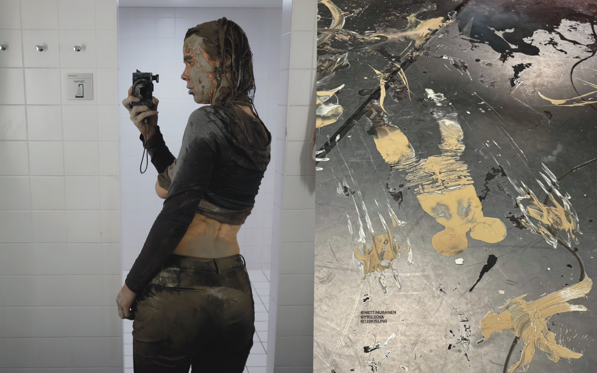

Ash, horizon, riding a house, Netti NüganenStage design and performingTanzquartier Wien, Kanuti Guild HALL 2025 In the centre of the stage there’s an industrial construction, a hub, that features ice panels painted with images alongside with scattered ice sculptures. The set carries its own narrative: the ice becomes like a character, with its own temperament, desires, and needs. During the performance, I paint on the panels as they melt increasingly quickly, using handmade paints made from clay and natural pigments. The imagery on the panels references genres and artists from the history of painting. By the end of the performance, I have become the brush myself — the paint flows off the ice, into the space, the air, and onto the floor. In a world where land, language and folklore have become commodities, the only place you're welcome back is outside - where greenery is no longer the primary reference. Instead, uneven floorboards, illusion mirrors and trickster steps form profitable landscapes. Nüganen, Kisling and Sova, as a reaction, open up their ice-manufacturing enterprise. In the backdrop of nightmares and constant dripping they navigate between multiple perspectives on locality, accompanied by CDJs and a banjo. At Earth magnitude they are specks of dust, and next to geological time as-if on speed. They trace locality from places where the influence of one dominant culture has made imported goods part of folklore, while the word 'local' still adds value when making choices as a tourist. "Ash, horizon, riding a house" is a series of chain-reactions that invites the audience to envision a belonging - one that cannot be seen from here. It must be imagined. |
|  |
| ← |